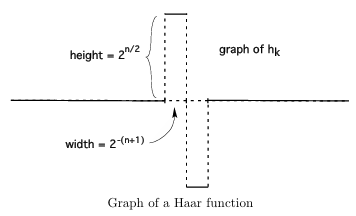
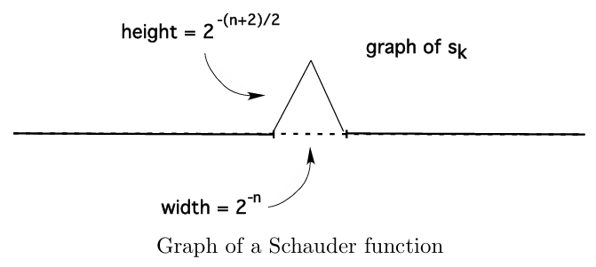

随机微分方程速通
看的是 Evans 的 Introduction to Stochastic Differential Equations 这本书.
\[ \newcommand{\Z}{\mathbb Z} \newcommand{\E}{\mathbb E} \newcommand{\p}{\mathbb P} \newcommand{\F}{\mathcal F} \newcommand{\Q}{\mathbb Q} \newcommand{\i}{\mathrm i} \newcommand{\spann}{\operatorname{span}} \newcommand{\1}{\Bbb 1} \newcommand{\var}{\operatorname{var}} \newcommand{\cov}{\operatorname{cov}} \newcommand{\R}{\mathbb R} \newcommand{\B}{\mathcal B} \newcommand{\bm}{\mathbf} \newcommand{\as}{\;\mathrm{a.s.}} \]
随机微分方程简介
一个常见的 ODE 是这么定义的: \[\begin{cases}\dot{\bm x}(t)=\bm b(\bm x(t)), & t>0\\ \bm x(0)=x_0 \end{cases}.\]
这里 \(\bm b:\R^n\to \R^n\) 是一个光滑向量场. ODE 的解 \(\bm x:[0,\infty)\to \R^n\) 是关于 \(t\) 的函数, 被称为 ODE 的轨迹. \(\bm x(t)\) 被称为 \(t\) 时刻系统的状态. 给定一个初始状态 \(x_0\), ODE 的解是唯一的.
但是在实际应用中, 观测到的轨迹可能伴随着随机的扰动, 将这种随机的噪声考虑进模型中:
\[\begin{cases}\dot{\bm X}(t)=\bm b(\bm X(t))+\bm B(\bm X(t))\bm \xi(t), & t>0\\ \bm X(0)=x_0 \end{cases}.\]
这里 \(\bm B: \R^n\to \R^{n\times m}\), \(\xi\) 是白噪声.
先考虑 \(m=n\), \(\bm b=0\), \(x_0=0\), \(\bm B=I\) 的情形, 即解方程 \(\bm X(t)=\xi (t)\). 方程的解被称为布朗运动 \(\dot W=\xi\), 然后白噪声就是布朗运动的关于时间的导数.
回到一般的方程, 形式化地两边 "同乘" \(dt\), 那就得到了
\[\begin{cases}d\bm X(t)=\bm b(\bm X(t))dt+\bm B(\bm X(t))d\bm W(t), & t>0\\ \bm X(0)=x_0 \end{cases}.\]
或者写成更严谨的积分形式: \[X(t)=x_0+\int_0^t \bm b(\bm X(s)) ds+\int_0^t\bm B(\bm X(s))d\bm W,\quad t>0.\]
我们要做的事情就是, 首先构造出布朗运动, 然后定义什么是随机积分, 最后证明上述方程有界.
链式法则, Ito 公式
设 \(X(t)\) 是方程 \(dX=b(X)dt+dW\) 的解. 现在考虑 \(Y(t)=u(X(t))\) 所满足的微分方程. 朴素的想法是直接两边微分得到 \[dY=u'dX=u'bdX+u'dW.\]
这其实是错误的. 后面会证明, 直观上有 \(dW\approx (dt)^{1/2}\). 所以上述的线性近似里面有一些由 \(dW\) 产生的一阶近似被扔掉了. 更合理的处理是: \[\begin{align*} dY&=u'dX+\frac 12u''(dX)^2+\cdots\\ &= u'(bdt+dW)+\frac 12u''(bdt+dW)^2+\cdots\\ &= (u'b+\frac 12 u'')dt+u'dW+\{高于 (dt)^{3/2} 的项\} \end{align*}\]
所以近似的得到 \[du(X)=(u'b+\textcolor{red}{\frac12 u''})dt+u'dW.\]
这就是所谓的 Ito 链式法则, 或者叫 Ito 公式. 书上还介绍了布朗运动这个名称的由来以及相关的历史, 并提供了充分的直观和 Motivation.
布朗运动, 白噪声
布朗运动的定义和性质
定义: 布朗运动
一个实值随机过程 \(W(\cdot)\) 被称为布朗运动, 如果
\(W(0)=0\);
\(W(t)-W(s)\sim N(0,t-s),\quad \forall\; t\ge s\ge 0\);
(独立增量) 对任意 \(0<t_1<\cdots<t_n<\), \(W(t_1), W(t_2)-W(t_1),\cdots, W(t_n)-W(t_{n-1})\) 独立.
下面计算布朗运动的有限维边缘分布:
首先, \(W(t_1)\sim N(0,t_1)\), 所以 \[\p(a_1\le W(t_1)\le b_1)=\int_{a_1}^{b_1}\frac{1}{\sqrt{2\pi t_1}}e^{-\frac{x_1^2}{2t_1}}dx_1.\]
然后由于 \(W(t_2)-W(t_1)\sim N(0,t_2-t_1)\), 所以给定 \(W(t_1)=x_1\) 的条件下, \(W(t_2)\sim N(x_1,t_2-t_1)\), 所以 \[\p(a_1\le W(t_1)\le b_1,a_2\le W(t_2)\le b_2)=\int_{a_1}^{b_1}\int_{a_2}^{b_2}g(x_1,t_1\mid 0)g(x_2,t_2-t_1\mid x_1)dx_1dx_2,\]
where \[g(x,t\mid y)=\frac1{\sqrt 2\pi t}\exp(-\frac{(x-y)^2}{2t}).\]
以此类推, \[\p(a_1\le W(t_1)\le b_1,\cdots, a_n\le W(t_n)\le b_n)=\int_{a_1}^{b_1}\cdots\int_{a_n}^{b_n}g(x_1,t_1\mid 0)g(x_2,t_2-t_1\mid x_1)\cdots g(x_n, t_n-t_{n-1}\mid x_{n-1})dx_n\cdots dx_1.\]
还可以推广至如下版本:
定理
对任意 \(0=t_0<t_1<\cdots<t_n\), \(\forall\; f:\R^n\to \R\), 有 \[\E[f(W(t_1),\cdots, W(t_n))]=\int_{\R^n}f(x_1,\cdots, x_n)g(x_1,t_1\mid 0)g(x_2,t_2-t_1\mid x_1)\cdots g(x_n,t_n-t_{n-1}\mid x_{n-1})dx_n\cdots dx_1.\]
取 \(f=\1_{[a_1,b_1]}\cdots \1_{[a_n,b_n]}\) 就得到了之前的公式.
证明: 设 \(X_i=W(t_i)\), 令 \(Y_i=X_i-X_{i-1}\), \(Y_i\sim N(0,t_i-t_{i-1})\) 且互相独立, 令 \[h(y_1,\cdots y_n)=f(y_1,y_1+y_2,\cdots, y_1+\cdots+y_n).\] 那么 \[\begin{align*}\E[f(W(t_1),\cdots, W(t_n))]&=\E h(Y_1,\cdots, Y_n)\\ &=\int_{\R^n}h(y_1,\cdots,y_n)g(y_1,t_1\mid 0)\cdots g(t_n,t_n-t_{n-1}\mid 0)dy_n\cdots dy_1\\ &=\int_{\R^n}f(x_1,\cdots, x_n)g(x_1,t_1\mid 0)\cdots g(x_n, t_n-t_{n-1}\mid x_{n-1}) dx_n\cdots dx_1.\end{align*}\]
最后一行用了换元公式, Jacobi 行列式是1.
白噪声的性质
\(W(t)\) 是布朗运动, 那么有 \(W(t)\sim N(0,t)\), 进而 \[\E W(t)=0,\quad \E W^2(t)=t.\]
协方差函数 \(\E[W(t)W(s)]=t\wedge s.\)
不严谨地来说, 有 \(\dot W(t)=\xi(t)\), \(\E[\xi(t)\xi(s)]=\delta_0(s-t)\). 对 a.e. \(\omega\in \Omega\), \(t\mapsto W(t,\omega)\) 是无处可微的, 所以前面的导数定义不合适.
书上还介绍了 "白噪声" 名词的由来, 以及\(\E[\xi(t)\xi(s)]=\delta_0(s-t)\) 的一个说明. 见 P44.
构造一个布朗运动
想法是利用 \(L^2(0,1)\) 中的基进行构造. 设 \(\{\phi_n\}\) 是 \(L^2(0,1)\) 的一组 ONB, 考虑令 \[\xi(t)=\sum_{n=0}^\infty A_n\phi_n(t),\quad 0\le t\le 1.\]
有 \(A_n=\int_0^1\xi(t)\psi_n(t)dt\). \(A_n\) 是随机变量, 我们假设他们是独立的, 且都是中心高斯变量.
我们可以验证这样的假设是合理的, 因为 \[\begin{align*}0=\E A_n\E A_m&=\E A_nA_m=\int_0^1\int_0^1\E[\xi(t)\xi(s)]\psi_n(t)\psi_m(s)dtds\\ &=\int_0^1\int_0^1\delta_0(s-t)\psi_n(t)\psi_m(s)dtds=\int_0^1\psi_n(s)\psi_m(s)ds\end{align*}.\]
所以 \(\E A_n^2=1\), \(\E A_nA_m=0\) for \(n\ne m\). 然后我们把布朗运动定义成 \[W(t)=\int_0^t \xi(s)ds=\sum_{n=0}^\infty A_n\int_0^t\psi_n(s)ds.\]
下面要做的事情就是找一组好的正交基, 然后把之前的论述严密化, 比如要合理论证级数的收敛与否. 来介绍 Levy 的构造
定义: Haar 函数
\(h_0(t):=1,\; 0\le t\le 1\), \(h_1(t)=\begin{cases}1&0\le t\le \frac 12\\ -1& \frac 12<t\le 1\end{cases}\),
设 \(2^n\le k< 2^{n+1}\), 定义 \[h_k(t)=\begin{cases}2^{n/2},&\frac{k-2^n}{2^n}\le t\le \frac{k-2^n+1/2}{2^n}\\ -2^{n/2},&\frac{k-2^n+1/2}{2^n}<t \le \frac{k-2^n+1}{2^n}\\ 0,& otherwise \end{cases}\] 我们可以证明 \(\{h_n\}\) 是 \(L^2(0,1)\) 的一组 ONB.

然后再定义 Schauder 函数 \(s_k(t)=\int_0^th_k(s)ds\). 其图像如下:

显然 \(\displaystyle \max_{0\le t\le 1}|s_k(t)|=2^{-n/2-1},\quad 2^n\le k<2^{n+1}\).
我们可以证明 \[\sum_{k=0}^\infty s_k(s)s_k(t)=t\wedge s,\quad 0\le t,s\le 1.\]
由此, 我们定义 \(W(t):=\sum_{k=0}^\infty A_ks_k(t),\; 0\le t\le 1\), \(\{A_k\}\) i.i.d. \(\sim N(0,1)\). 剩下的就是验证这个级数收敛.
证明: TODO.
我们把结论总结如下:
定理: 布朗运动的构造
\(\{A_k\}\) i.i.d. \(\sim N(0,1)\). 级数 \[W(t,\omega)=\sum_{k=0}^\infty A_k(\omega)s_k(t)\quad (0\le t\le 1)\]
对 a.e.\(\omega\in\Omega\) 在 \(t\in [0,1]\) 上一致收敛. 并且
\(W(t), 0\le t\le 1\) 是布朗运动;
对 a.e. \(\omega\in\Omega\), 样本轨道 \(t\mapsto W(t,\omega)\) 连续.
样本轨道的性质
定理:
对 a.e. \(\omega\), 对任意 \(T>0\). 样本轨道 \(t\mapsto \bm W(t,\omega)\) 在 \([0,T]\) 上一致 Holder 连续, 对任意指标 \(0<\gamma<1/2\).
即存在常数 \(K\), \[|\bm X(t,\omega)-\bm X(s,\omega)|\le K|t-s|^\gamma,\quad \forall\; 0\le s,t\le T.\]
Markov 性质
由 s 时刻之前生成的 \(\sigma\)-field \(\F(s)=\sigma(X(r)\mid 0\le r\le s)\)被称为到 \(s\) 时刻的历史.
定义: Markov 过程
取值在 \(\R^n\) 中的随机过程 \(\bm X(s)\) 被称为 Markov 过程, 如果对任意 Borel 集 \(B\in \B(\R^n)\), \[\p(\bm X(t)\in B\mid \F(s))=\p(X(t)\in B\mid X(s))\as\quad \forall\; 0\le s\le t.\]
这就是说根据 \(X(s)\) 去预测 \(X(t)\) 的效果和用全部 \(s\) 之前的信息去预测是一样的. 或者说, Markov 过程只记得 \(X(s)\) 的结果, 但是忘了怎么过来的.
定理: 布朗运动是 Markov 过程
\(n\) 维的布朗运动 \(\bm W\) 是 Markov 过程, 并且 \[\p(\bm (t)\in B\mid \bm W(s))=\frac1{(2\pi(t-s))^{n/2}}\int_B \exp(-\frac{|x-\bm W(s)|^2}{2(t-s)})ds\as\quad \forall\; 0\le s<t,\;\forall\; B\in \B(\R^n).\]
随机积分
首先定义 \(\int_0^T gdW\) 这种积分 (Paley-Wiener-Zygmund stochastic integral), 其中 \(g\) 是一个固定的函数, 不是随机变量, \(W\) 是布朗运动.
对 \(C^1\) 函数定义积分.
设 \(g:[0,T]\to \R\) 连续可微, \(g(0)=g(T)=0\). 定义 \[\int_0^T gdW:=-\int_0^T g'Wdt.\]
积分的结果是一个随机变量. 直接的计算可以验证 \[\E[\int_0^T gdW]=0,\quad \E[(\int_0^T gdW)^2]=\int_0^T g^2dt.\]
利用稠密性定义在 \(L^2(0,T)\) 上定义积分.
设 \(g\in L^2(0,T)\). 取 \(\{g_n\}\subset C^1(0,T)\), 满足 \(g_n(0)=g_n(T)=0\), 使得 \(\int_0^T (g_n-g)^2dt\). (这是因为紧支光滑函数在 \(L^2(0,T)\) 中稠密). 根据之前方差的结论, 我们有 \[\E[(\int_0^T g_mdW-\int_0^T g_ndW)^2]=\int_0^T(g_m-g_n)^2dt=\|g_m-g_n\|_{L^2(0,T)}.\]
这说明 \(\{\int_0^T g_ndW\}\) 是 \(L^2(0,T)\) 里的 Cauchy 列. 根据完备性, 我们把积分定义成上述序列的 \(L^2\) 极限: \[\int_0^TgdW:=\lim_{n\to\infty}\int_0^T g_ndW.\]
同样可以验证 \[\E[\int_0^T gdW]=0,\quad \E[(\int_0^T gdW)^2]=\int_0^T g^2dt.\]
然后定义被积函数是布朗运动的积分, 比如 \(\int_0^T WdW\). 思路是用 Riemann 和来逼近.
对区间 \([0,T]\), 取划分 \[P:=\{0=t_0<t_1<\cdots<t_m=T\}.\]
定义 \[|P|=\max_{0\le k\le m-1} |t_{k+1}-t_k|.\]
取分点: \[\tau_k:=(1-\lambda) t_k+\lambda t_{k+1}\in [t_k,t_{k+1}],\quad k=0,\cdots, m-1.\] 注意这里和普通的 Riemann 积分定义不一样, 所有小区间上的分点我们选择相同的定比分点, 即 \(\lambda\) 是所有小区间上统一的一个固定常数.
我们定义 \(\int_0^T WdW\) 的 Riemann 和为 \[R(P,\lambda):=\sum_{k=0}^{m-1}W(\tau_k)(W(t_{k+1})-W(t_k)).\]
我们希望找到 \(|P|\to 0\) 时 Riemann 和的 \(L^2\) 极限.
引理: 二次变分
区间 \([a,b]\subset [0,\infty)\), 定义 \([a,b]\) 的划分 \[P^n=\{a=t_0^n<t_1^n<\cdots<t_{m_n}^n=b\}.\]
设 \(|P^n|\to 0\) as \(n\to\infty\). 那么有 \[Q_n=\sum_{k=0}^{m_n-1}(W(t_{k+1}^n)-W(t_k^n))^2\stackrel{L^2}\to b-a\quad n\to\infty.\]
证明: \[\begin{align*}\E[(Q_n-(b-a))^2]&=\E\left\{\sum_{k=0}^{m_n-1}((W(t_{k+1}^n)-W(t_k^n))^2-(t_{k+1}^n-t_k^n))\right\}^2\\ &=\sum_{k=0}^{m_n-1}\sum_{j=0}^{m_n-1}\E((W(t_{k+1}^n)-W(t_k^n))^2-(t_{k+1}^n-t_k^n))((W(t_{j+1}^n)-W(t_j^n))^2-(t_{j+1}^n-t_j^n)).\end{align*}\]
对 \(k\ne j\) 的项, 根据独立增量, \(W(t_{k+1})-W(t_k)\) 和 \(W(t_{j+1})-W(t_j)\) 独立, 且由 \(W(t)-W(s)\sim N(0,t-s)\), \[\E((W(t_{k+1}^n)-W(t_k^n))^2-(t_{k+1}^n-t_k^n))((W(t_{j+1}^n)-W(t_j^n))^2-(t_{j+1}^n-t_j^n))=\E((W(t_{k+1}^n)-W(t_k^n))^2-(t_{k+1}^n-t_k^n))\E((W(t_{j+1}^n)-W(t_j^n))^2-(t_{j+1}^n-t_j^n))=0.\]
所以只剩下 \(k=j\) 的项, 即 \[\begin{align*}\E[Q_n-(b-a)^2]&=\sum_{k=0}^{m_n-1}\E((W(t_{k+1}^n)-W(t_k^n))^2-(t_{k+1}^n-t_k^n))^2\\ &=\sum_{k=0}^{m_n-1}\E((\frac{W(t_{k+1}^n)-W(t_k^n)}{t_{k+1}^n-t_k^n})^2-1)^2(t_{k+1}^n-t_k^n)^2\\ &:=\sum_{k=0}^{m_n-1}\E(Y_k^n^2-1)^2(t_{k+1}^n-t_k^n)^2.\end{align*}\]
这里 \(Y_k^n=\frac{W(t_{k+1})-W(t_k^n)}{\sqrt{t_{k+1}^n-t_k^n}}\sim N(0,1)\). 设 \(\E[(Y_k^2-1)^2]\le C\). \[\E[Q_n-(b-a)^2]\le C\sum_{k=0}^{m_n-1}(t_{k+1}^n-t_k^n)^2\le C|P^n|(b-a)\to 0\quad n\to\infty.\]
从这里可以看出 \(dW\approx (dt)^{1/2}\).
通过 Riesz 定理取子列, 不妨设 \[\sum_{k=0}^{m_n-1}(W(t_{k+1}^n)-W(t_k^n))^2\stackrel{\as}\to b-a.\]
由对任意 \(0<\gamma<\frac 12\), 样本轨道是 \(\gamma-\) Holder 连续的, \[\sum_{k=0}^{m_n-1}(W(t_{k+1}^n)-W(t_k^n))^2\le K\sum_{k=0}^{m_n-1}|W(t_{k+1}^n)-W(t_k^n)||t_{k+1}^n-t_k^n|^\gamma\le K|P^n|^\gamma\sum_{k=0}^{m_n-1}|W(t_{k+1}^n)-W(t_k^n)|\]
取上极限, 得到 \[b-a\le K\limsup_{n\to\infty}K|P^n|^\gamma\sum_{k=0}^{m_n-1}|W(t_{k+1}^n)-W(t_k^n)|.\]
由 \(|P^n|\to 0\), 可知 \[\sup_{P}\sum_{k=0}^{m_n-1}|W(t_{k+1}^n)-W(t_k^n)|=\infty \as\]
这就是说布朗运动的样本轨道以概率 1 是无界变差的.
定理
\(P^n\) 是 \([0,T]\) 的划分, \(0\le \lambda\le 1\), \(|P^n|\to 0\). 定义分点 \(\tau_k^n=(1-\lambda)t_k^n+\lambda t_{k+1}^n\). \[R_n:=\sum_{k=0}^{m-1}W(\tau_k^n)(W(t_{k+1}^n)-W(t_k^n)).\]
那么 \[R_n\stackrel{L^2}\to\frac{W(T)^2}2+(\lambda-\frac 12)T.\]
证明: 基本的精神还是利用独立增量的性质.
Ito 积分的定义是取 \(\lambda=0\). 所以有 \(\int_0^TWdW=\frac{W^2(T)}2-\frac{T}2\).
Ito 积分
设 \(W\) 是定义在 \((\Omega,\F,\p)\) 上的一维布朗运动. 我们定义 \(\mathcal W(t):=\sigma(W(s)\mid 0\le s\le t)\) 为布朗运动到时间 \(t\) 为止的 历史. \(\mathcal W(t)^+=\sigma(W(s)-W(t)\mid s\ge t)\) 为 布朗运动在 \(t\) 时刻后的 未来.